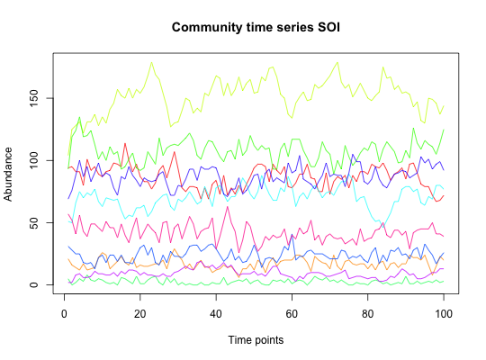

Generate time series with the self-organized instable (SOI) model based on Sole et al. (model B).
soi(N, I, A, m.vector = runif(N), e.vector = runif(N), tend)
| N | number of species |
|---|---|
| I | number of individuals |
| A | interaction matrix |
| m.vector | species-specific immigration probabilities (these also determine initial abundances) |
| e.vector | species-specific extinction probabilities |
| tend | number of time points (i.e. the number of generations) |
a matrix with species abundances as rows and time points as columns
Sole et al. 2002 "Self-organized instability in complex ecosystems"
ricker for the Ricker model
#> [1] "Adjusting connectance to 0.1" #> [1] "Initial edge number 100" #> [1] "Initial connectance 1" #> [1] "Number of edges removed 81" #> [1] "Final connectance 0.1" #> [1] "Final connectance: 0.1"